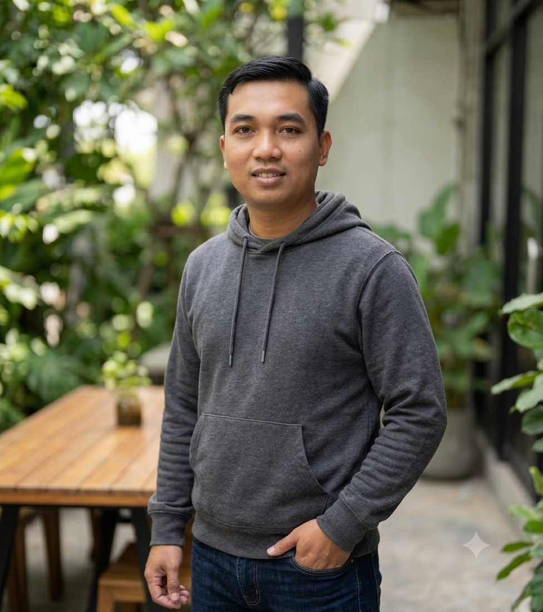

Profesional IT berpengalaman dengan pengalaman lebih dari 10 tahun di bidang IT Support, Helpdesk, Network & Infrastructure.
Download CVSaya memiliki pengalaman di bidang IT sejak 2015. Berpengalaman menangani troubleshooting hardware, software, jaringan LAN/WAN, monitoring perangkat, user support dan maintenance infrastruktur IT.
TCP/IP, LAN, WAN, VLAN, Routing, Switching, Mikrotik, Cisco Basic
Windows Server, Active Directory, Backup, Monitoring System
Troubleshooting PC, Printer, Hardware, Software, User Support
- Maintenance jaringan perusahaan
- Monitoring perangkat network
- Troubleshooting koneksi
- Support user dan infrastruktur
- Installasi hardware/software
- Menangani tiket user
- Maintenance komputer
- Support operasional IT
- Troubleshooting user
- Monitoring perangkat
- Support aplikasi internal
Mikrotik • Windows Server • Active Directory • Remote Desktop • TeamViewer • VPN • CCTV • Microsoft Office